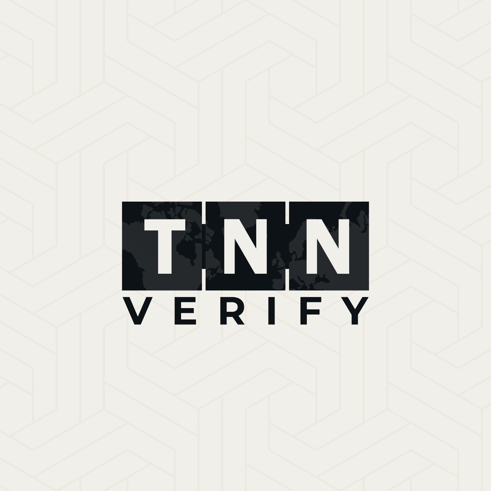
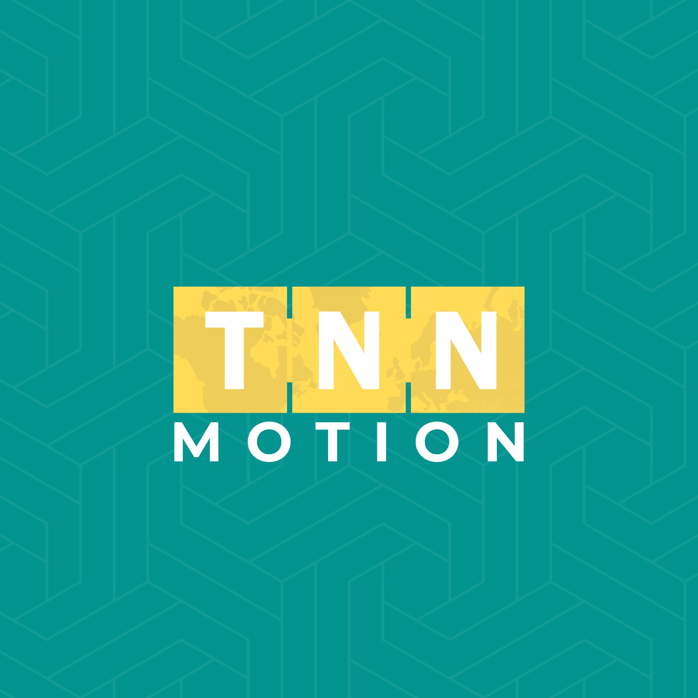
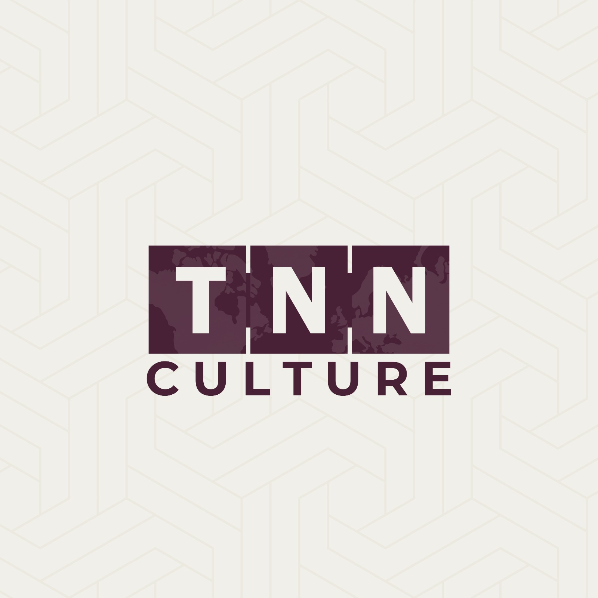

One network.
Every story verified.
TNN connects trusted journalism, independent fact-checking, sport, culture, motion and English-language reporting through one forward-looking media network.



Six desks. One network.
Each TNN platform has its own purpose, voice and audience — built on one shared editorial standard.
Trusted reporting for the stories that matter.
The game, beyond the score.
Bangladesh, explained for the world.
Evidence over virality.
Visual stories with purpose and momentum.
Stories, people and the culture that moves us.
Built on standards, not noise.
Independent journalism
Reporting designed around public interest and editorial responsibility.
Evidence-led verification
Claims are evaluated through sources, context and evidence.
Transparent corrections
Errors should be visible, understandable and corrected responsibly.
Responsible publishing
Technology should improve information — not amplify noise.
Public-interest information
Useful journalism should help people understand the world around them.
A new kind of media network.
The Narration Network is an independent Bangladeshi media ecosystem building specialised platforms for trusted reporting, verification, sport, culture, motion and global-facing English journalism.
We believe audiences deserve information that is clear, responsible and accountable — not simply louder.
Platforms
Network
Signals